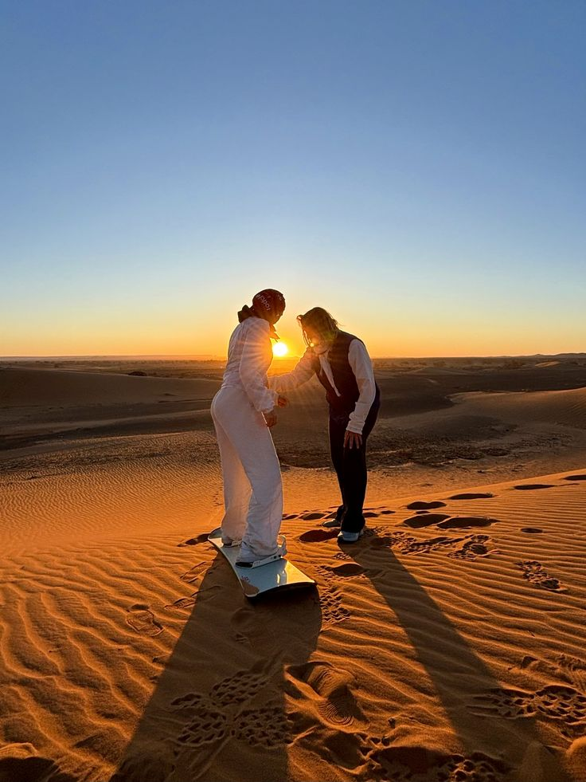
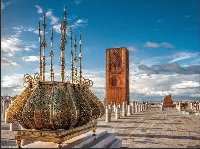
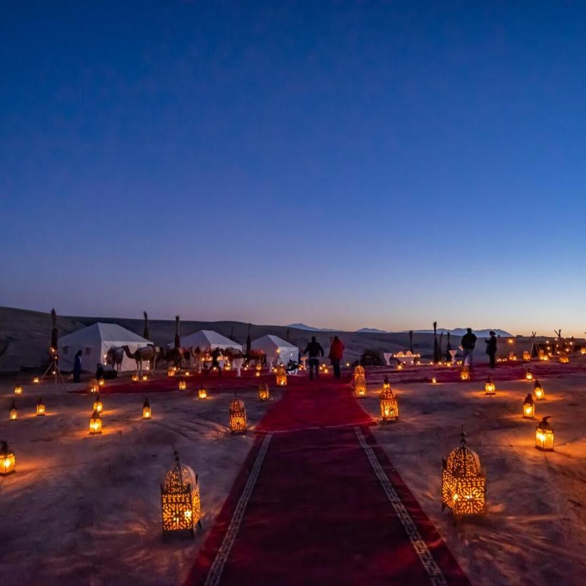
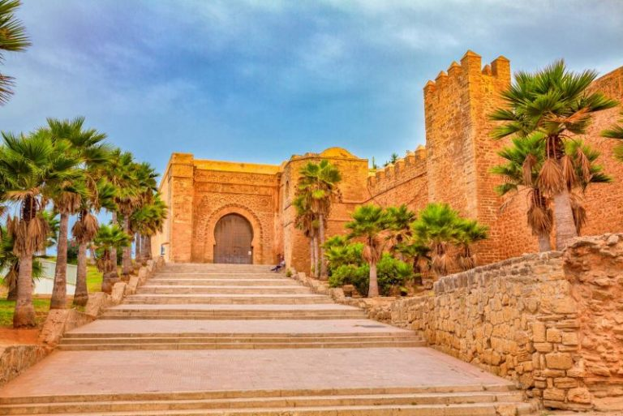
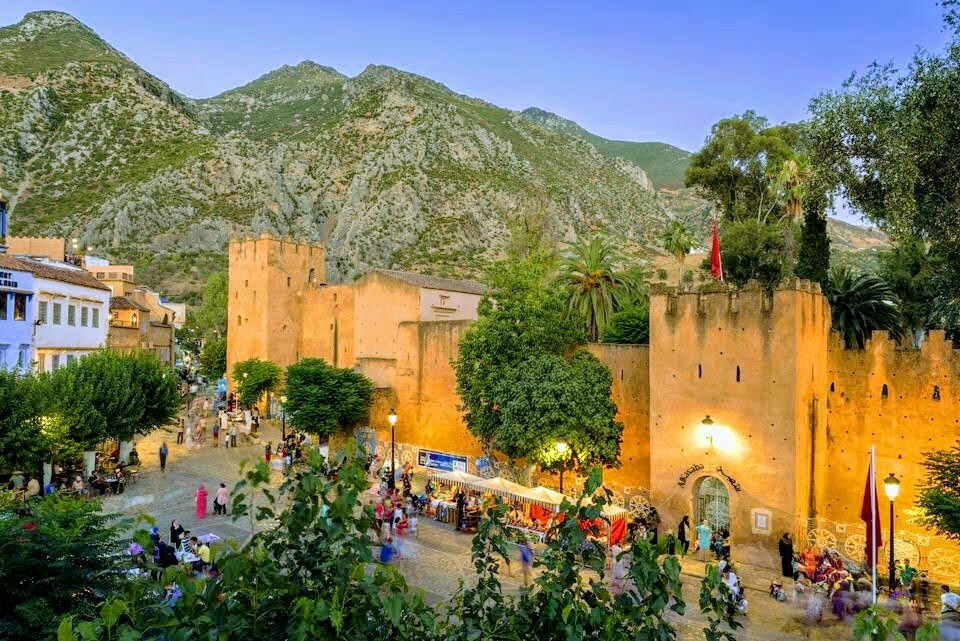
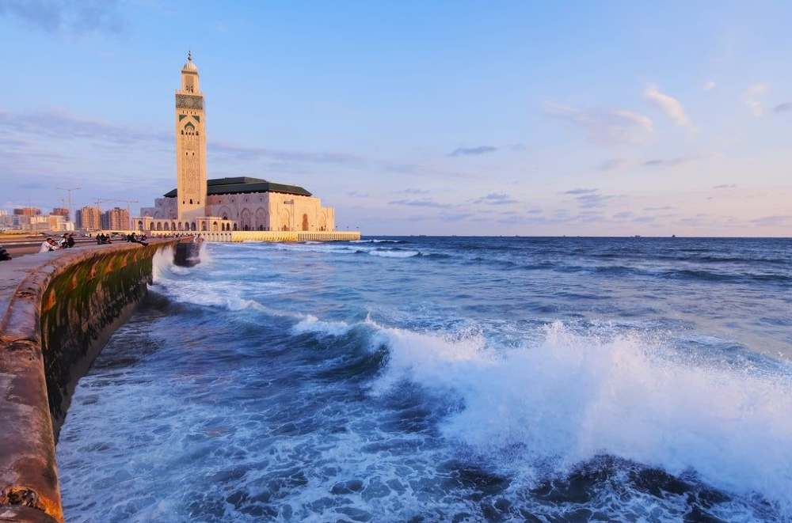

A week-long journey through Morocco’s imperial heritage, medinas, Atlas passes, and the Sahara. Begin on the Atlantic in Casablanca and Rabat, delve into the spiritual heart of Fes, cross to the dunes of Erg Chebbi for sunset, and traverse oases and ksars before concluding in Marrakech.
From €850 per person